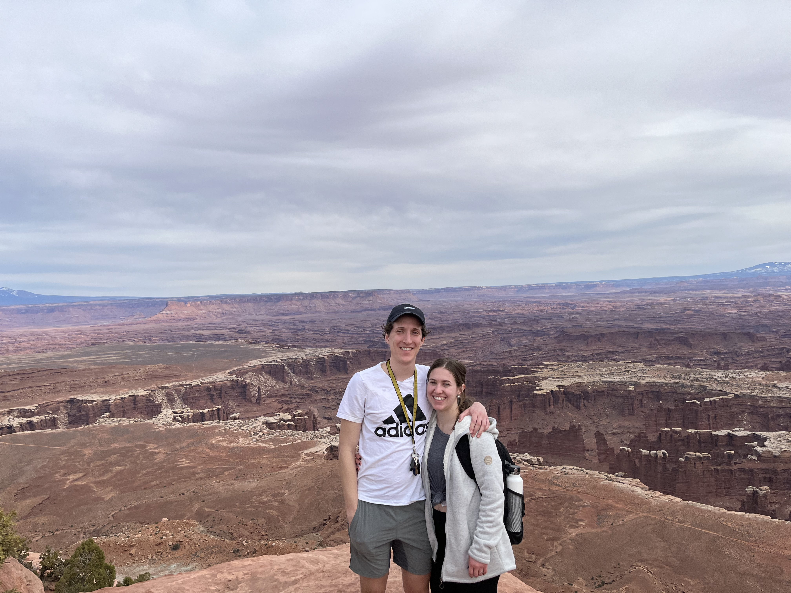

Welcome to my About Me page. My name is Erin! I was born and raised in Utah and am the fourth of five kids. I have three sisters, one brother, and two brother in laws. I became an Aunt to four adventurous nephews in 2020.

I got married to Jordan in 2021. We both graduated from BYU in spring of 2022, him in Engineering and me in Communications. We've accepted jobs out of state and are excited to start our new chapter in life.

My hobbies include binge watching cooking competitions, spending time with family, and trying to convince my husband that we should eat sushi every night. Jordan and I enjoy traveling to National Parks, playing and watching sports, working out, and making new recipes in our air fryer.

Here is one of my favorite stretching videos to do after a workout!
Contact Info:
contactme@hotmail.com
(801)867-5309